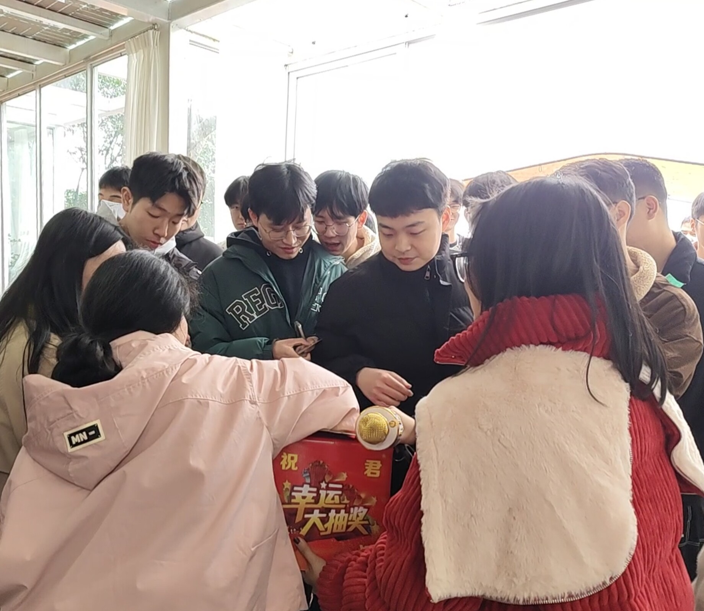
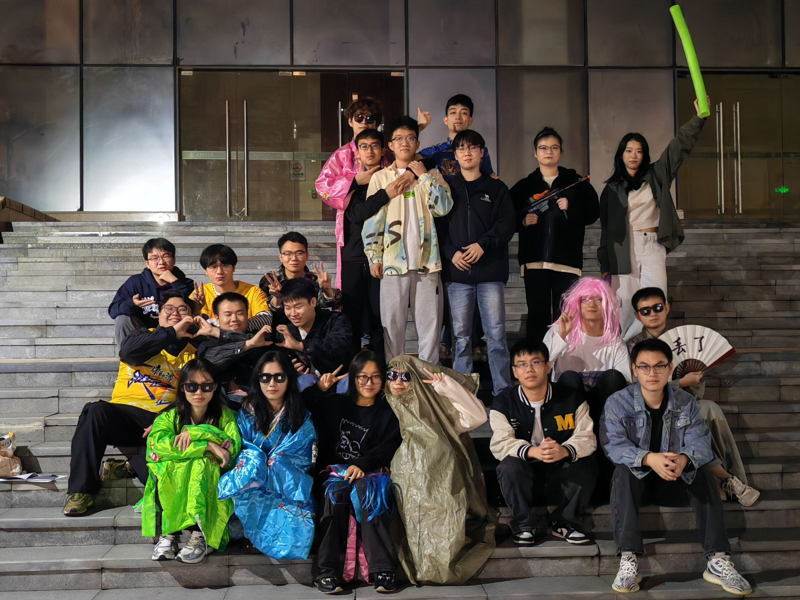
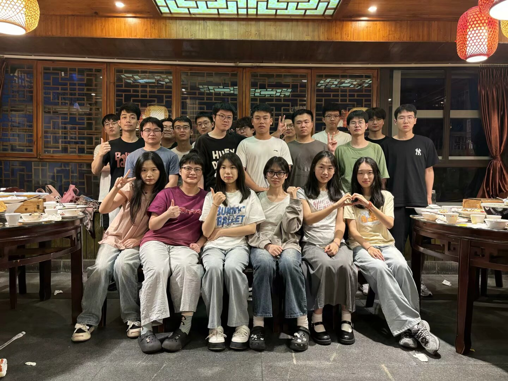
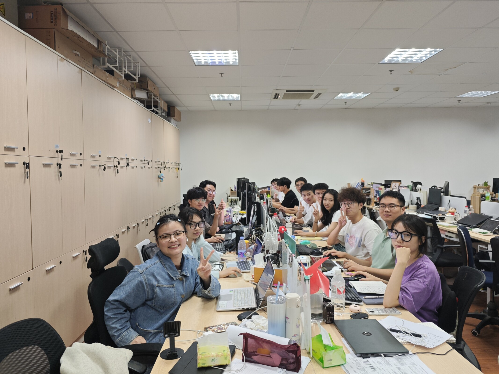

通信软件技术创新团队历经近20年的研究生教育教学的研究与探索，形成了完整的硕士培养模式。同时，团队建立了稳定有效的产、学、研结合的运行模式。团队中研究生培养主体分为三个阶段：专业学习、研发/工程项目实践、理论的研究与提炼。团队着重培养研究、开发能力的同时也十分关注研究生的技术应用能力、技术管理能力以及组织协调能力，与多个单位紧密合作，建立了配套的实践环境和机制。
团队的研究领域包括通信网理论与技术、物联网通信平台、融合通信设备、协议软件开发、通信软件测试、信息项目管理等。主要培养具备科学研究、技术开发、工程实践及管理的综合能力的高级专业人才。其中，信息化项目管理方向，是团队的一个重点方向之一。信息化项目管理方向即信息化工程项目建设监理，主要依托团队的合作企业开展工作与学习。让每一位研究生都有提前到公司锻炼的宝贵机会，在学习的同时提升自己技术应用、项目管理以及协调组织等多方面的能力。

写这篇文章的此刻我已经融入这个实验室半年有余。我很感谢陶老师能让我有机会加入咱们这个团队。陶老师不仅是学习上的导师，更是生活上的导师。所以在团队里学到的不仅仅是知识，更多的是待人接物的礼貌，为人处事的能力，对美好事物的欣赏能力，以便我们能更好地感知生活、享受生活、热爱生活。对美的热爱是我们对抗平庸枯燥生活的良药。这一年来老师也对我们说过“对于院士来说，这个头衔只是对他过去所做贡献的一种肯定”。我想求学者之于分数也一样吧。未来怎么样，绝不能以分数一以蔽之，未来终归掌握在自己手中。

2024年的暑假无疑是我觉得最充实，最有意义的一个暑假。按照实验室的惯例，暑期师兄师姐们都会提前来指导、培训我们。内容方面涵盖了C++、Linux、HTML、QT、机器学习以及软件测试等多个方面，总有一款适合你。暑期培训结束后陶老师也会带着我们出去进行社会实践。“人文素养”一直也是老师强调的。这一段时间里，快乐和奋斗扭在一起螺旋推动着我们不断成长。 刚接触新的领域的时候也许是忧愁的，但和实验室的大家相处的这段时光一定是快乐的。我们一起排练节目，一起恰饭，一起上分，一起成长。

陶老师给我印象最深刻的就是在暑假那会，陶老师穿着考究坐在办公室长桌尽头，师兄师姐们为我们每人准备了咖啡，陶老师简单提了一下学习相关的内容之后，话题开始转向我们，在我们自我介绍的空隙不断对我们进行更细致的了解，期间还不断写写画画，我们的名字籍贯联系方式一一浮现在那页纸上。后续交代了许多关于为人处事的事情，比如开会的时候要穿带领子的衣服等等，从那开始，心里的导师就有了脸。我很庆幸遇到了这样的良师。在平时与老师吃饭聊天的时候他也是我们的朋友。我们一起聊咖啡、聊美食、分享自己的所见所闻。

人生总有些事情是意想不到的，选择大于努力我们早已深有体会。我们广纳贤才，但我们宁缺毋滥，成为我们的一员，让我们惺惺相惜，让我们发光发热，成为我们的一员，将是改变你一生的决定！